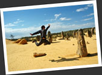

第七章
尖峰石陣 The Pinnacles
距離 Perth 約二百多公里的尖峰石陣 Pinnacles Desert 是位處於 Nambung National Park 內的一個自然奇觀．在廣闊的黃色沙漠上，聳立著一塊又一塊奇形怪狀的巨形尖石柱．據說這兒從前是一片森林，經過百萬年的風化下變成了沙漠，原來每一棵樹的位置變成了一條石柱．我雖然不太明白中間的地理演化，但面對著這一大片望不到盡頭的石柱陣，黃澄澄的沙土，發亮沒有一點雲的藍天，不禁嘆服自然之奇．我記得宣傳單張上印有人們在 Pinnacles 跳起的照片，於是依樣葫蘆，在 Pinnacles 沙漠之上大跳特跳一番......
前往 Pinnacles 途中還經過了動物園 Caversham Wildlife Park，嘗試親手餵袋鼠，看看樹熊和袋熊 Wombat．一路往北走，欣賞沿途的春天野花．看過 Pinnacles，我們又到了附近一個叫 Lancelin 的地方，這兒的海邊有個大得嚇人的沙丘，在這兒我們可以一試滑沙的刺激滋味．沙丘有多大？我也不清楚，或許有旺角這麼大吧！實在想不通，為何一個如此大的沙丘會平端無事地出現在這兒，而且沙粒都是又白又幼．人在沙丘上，風夾帶著沙粒襲來，感覺有如置身於沙漠之中......西澳的確是個令人驚喜的地方．